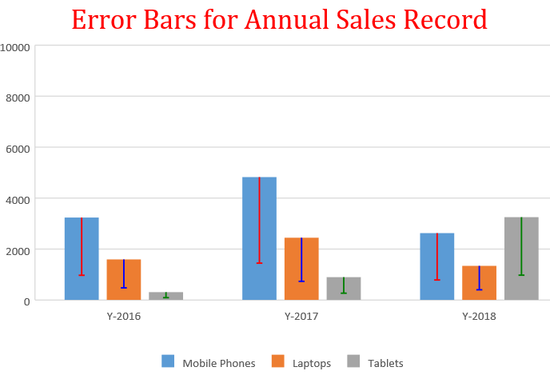

SpreadJS allows users to add, modify, and remove error bars in a chart. Error Bars can be added on top of a regular data series while working with charts. Users can show error bars on all data points or data markers in a data series as a standard error amount, a percentage, or a standard deviation.
Error bars act as an extremely useful tool for scientists, statisticians, and research analysts to showcase data variability and measurement accuracy.
Incorporating error bars in charts is beneficial especially when users need to:
Example: Let's say you want to show a 15% positive and negative error amount in the results of a scientific experiment or an accounting application, you can configure error bars in your chart to depict such data.

Besides calculating and displaying confidence intervals, margins of error, and standard deviations; error bars also provide an effective way to enhance the overall data visualization of the chart.
The following chart types are supported while adding error bars in charts:
The direction of the error bar is automatically determined by the chart type that you're using and this property cannot be set and modified by the users.
The order in which the error bars and other chart elements are drawn depends upon the chart type selected by the user.
Users can add three different types of error bars in the charts. This includes "Plus", "Minus", and "Both".
| Type | Description |
| Plus | This type of error bar depicts only the positive values. |
| Minus | This value represents the error as a percentage of the data value in the same direction axis. |
| Both | This value represents the error as a number of standard deviations (along with a calculating value which dependents on the set deviations and chart data values) |
Users can tweak the default appearance of the error bars by toggling the visibility of end-caps on the lines. The available options are "No Cap" and "Cap".
| Type | Description |
| No Cap | This option is used to hide end caps on the error bar lines. |
| Cap | This option is used to show end caps on the error bar lines. |
Users can set their own values to display the exact error amounts that they want. The available options are "Fixed Value", "Percentage", "Standard Deviation", "Standard Error", and Custom.
| Type | Description |
| Fixed Value | This value represents the error as an absolute value. |
| Percentage | This value represents the error as a percentage of the data value in the same direction axis. |
| Standard Deviation | This value represents the error as a number of standard deviations (along with a calculating value which dependents on the set deviations and chart data values) |
| Standard Error | This refers to the standard error of the mean (value property is not used). |
| Custom | Custom error amounts refer to the error values that are bound through the binding property or set to an object with 'positive' and 'negative' values respectively by formulas or fixed values. |
The following example code depicts how to use different error bars in the chart.
| JavaScript |
Copy Code
|
|---|---|
var activeSheet = spread.getActiveSheet(); activeSheet.suspendPaint(); //prepare data for chart activeSheet.setValue(0, 1, "Y-2016"); activeSheet.setValue(0, 2, "Y-2017"); activeSheet.setValue(0, 3, "Y-2018"); activeSheet.setValue(1, 0, "Mobile Phones"); activeSheet.setValue(2, 0, "Laptops"); activeSheet.setValue(3, 0, "Tablets"); for (var r = 1; r <= 3; r++) { for (var c = 1; c <= 3; c++) { activeSheet.setValue(r, c, parseInt(Math.random() * 5000)); } } // Add columnClustered chart chart_columnClustered = activeSheet.charts.add('chart_columnClustered', GC.Spread.Sheets.Charts.ChartType.columnClustered, 50, 100, 600, 400, "A1:D4"); // Adding ErrorBars on series[0] i.e. Mobile Phones var series1 = chart_columnClustered.series().get(0); series1.errorBars = { vertical: { type: 1, // minus valueType: 2, // percentage value: 70, // 70% noEndCap: false, // no end cap style: { color: 'red', // line color width: 1.5 // width of line } } }; // Adding ErrorBars on series[1] i.e. Laptops var series2 = chart_columnClustered.series().get(1); series2.errorBars = { vertical: { type: 1, // minus valueType: 2, // percentage value: 70, // 70% noEndCap: false, // no end cap style: { color: 'blue', // line color width: 1.5 // width of line } } }; // Adding ErrorBars on series[2] i.e. Tablets var series3 = chart_columnClustered.series().get(2); series3.errorBars = { vertical: { type: 1, // minus valueType: 2, // percentage value: 70, // 70% noEndCap: false, // no end cap style: { color: 'green',// line color width: 1.5 // width of line } } }; chart_columnClustered.series().set(0, series1); chart_columnClustered.series().set(1, series2); chart_columnClustered.series().set(2, series3); // Configure Chart Title var title = chart_columnClustered.title(); title.text = "Error Bars for Annual Sales Record"; title.fontFamily = "Cambria"; title.fontSize = 28; title.color = "Red"; chart_columnClustered.title(title); activeSheet.resumePaint(); |
|